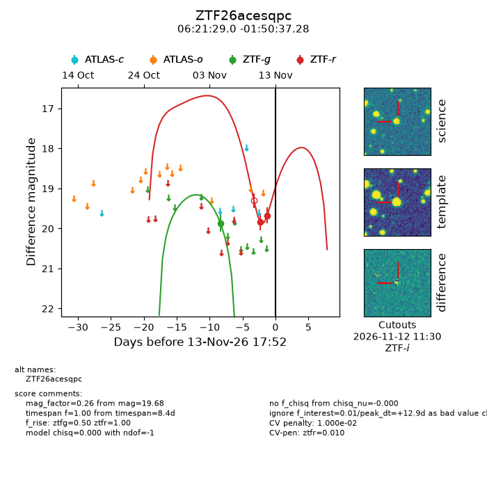
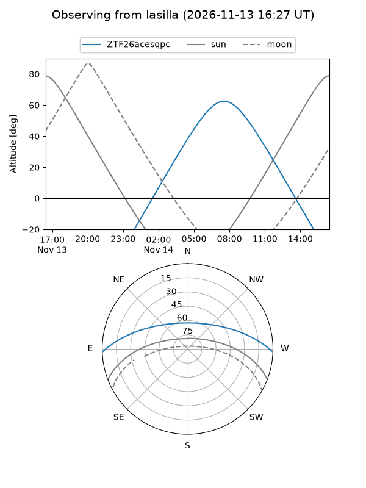
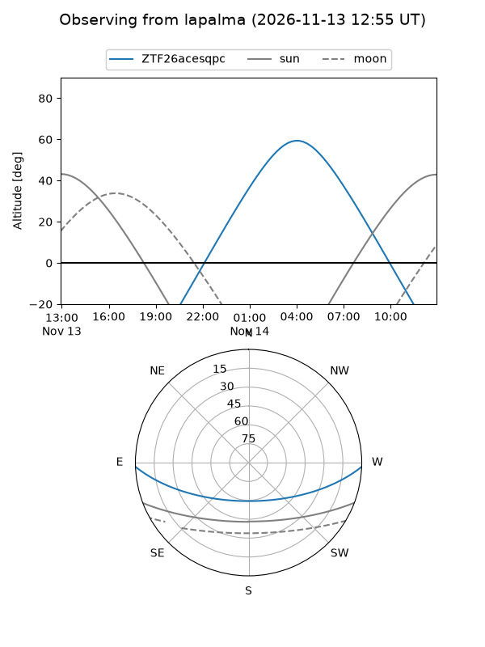
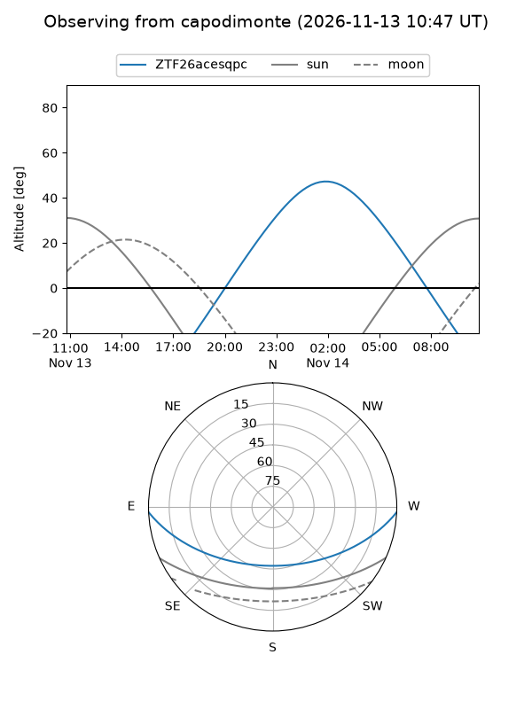
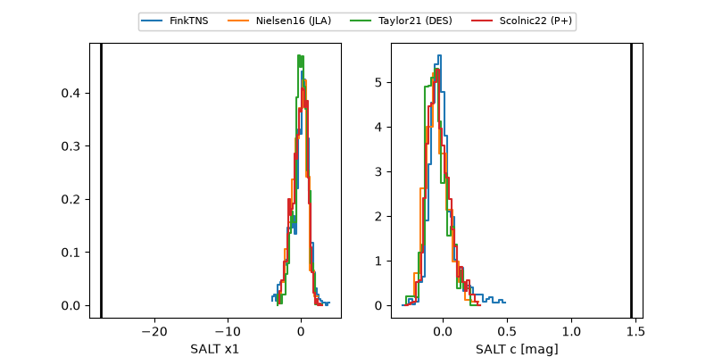

ZTF26acesqpc
Target ZTF26acesqpc at 2026-11-13 17:58
Aliases and brokers:
FINK-ZTF: ztf.fink-portal.org/ZTF26acesqpc
Lasair-ZTF: lasair-ztf.lsst.ac.uk/objects/ZTF26acesqpc
ALeRCE-ZTF: alerce.online/object/ZTF26acesqpc
Direct TNS query: direct search
alt names
ZTF26acesqpc (ztf,fink_ztf)
Coordinates:
equatorial (ra, dec) = 95.3708,-1.84369
equatorial (HMS+DMS) = 06:21:28.99,-01:50:37.28
galactic (l, b) = (211.1537,-7.50444)
Flags:
likely cv: !!
CV pen: 0.01
peak dt: +12.9
Photometry:
last ztfg=19.86, ztfr=19.68
1 ztfg, 2 ztfr detections
Lightcurve

Visibility



Additional plots
